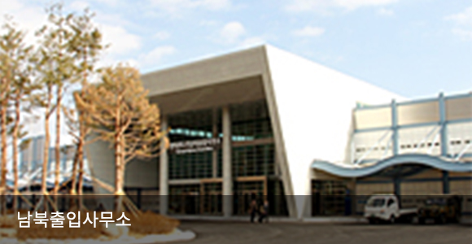
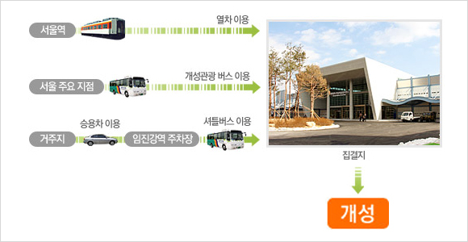
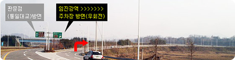
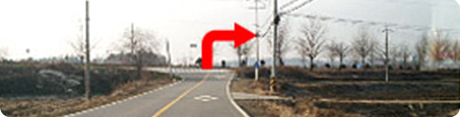
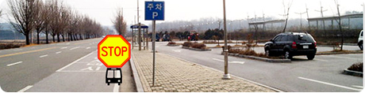
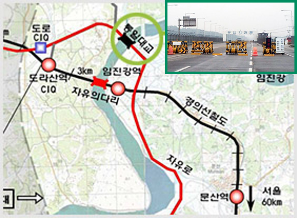
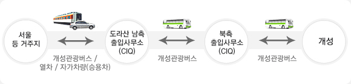

출발안내
여행에 필요한 준비사항!
짐꾸리기부터 출입과 유의사항 안내
여행에 필요한 것과 가져가지 말아야 할 것,
어떤 것들이 있을까요?
개성관광에 필요한 짐꾸리기를 자세하게 안내해 드립니다. 여행이 더욱 즐거워지고 편리하기 위한 짐꾸리기를 차근 차근 확인해 보세요~
-
- 신분증
- 주민등록증, 운전면허증, 여권 중 하나 필수지참
-
- 배낭
- 코스 여행시 물 간식, 수건 등을 넣을 수 있는 것으로 준비하세요.
-
- 모자
- 겨울에는 체온 유지용, 여름에는 자외선 차단 용도로 필요합니다.
-
- 카메라
- 필름카메라는 반입을 금하고 있으며, 디지털 카메라만 허용, 초점거리 160mm미만의 렌즈, 광학기준 24배줌 미만의 카메라만 반입 가능하므로 확인 후 준비 바랍니다.
-
- 미국 달러($)
- 관광 중에 통용되는 화폐는 미달러($)이오니, 편리한 여행을 위해 미리 환전하시기 바랍니다. 관광출발 시 집결지인 도라산 남북출입국 사무소-우리은행에서 환전 가능합니다.
※ 개성 현지에서는 환전이 불가능 합니다.
-
- 의류
- 이동시에는 여행용 가방이 편합니다. 관광지에서는 숙소에 여행용 가방을 두고 작은 배낭이나 벨트색을 사용하세요.
-
- 벨트색
- 지갑, 신분증 등을 보관
-
- 시계
- 개성에는 핸드폰을 가져갈 수 없으므로, 시계를 준비하시면 편합니다.
- 10배율 이상의 쌍안경/망원경, 160mm 이상의 망원렌즈가 달린 사진기, 24배줌(광학기준) 이상의 줌렌즈가 달린 비디오카메라, 사진, 필름, 비디오테입, CD, 카세트테이프, 휴대폰(배터리 포함), MP3, GPS, 네비게이션, 소형라디오, 녹음기
- 개인의 치료목적을 위한 것을 제외한, 상표와 설명서가 없어 그 성분과 용도를 알 수 없는 약품 및 상품
- 관광객의 문화생활 및 편의목적으로 인정되는 종류와 수량을 제외한 인쇄물, 그림, 글자판, 녹화테이프
- 위조지폐
- 의료목적을 위한 것을 제외한 독약, 마약, 그 밖의 유독성 화학물질
- 무기, 총탄, 폭발물, 군용품, 흉기, 방사성물질, 인화물질
- 무전기와 그 부속품
- 전염병이 발생한 지역의 물건
- 기타 관광에 적합하지 않는 물건
- 남측의 신문 및 잡지
※ 상기 품목은 개성관광 전에 도라산 남측출입국사무소 CIQ (출입사무소 입구 우측 안내데스크)에 보관하여 주시고, 개성관광 후 찾으시기 바랍니다.
-
 카메라안내
카메라안내
- 광학기기들은 1번 항목의 기준 이내면 휴대가능하며, 카메라의 기준은 렌즈의 초점거리 160미리 (35미리 기준)로 설명하고 있습니다. 최근 많은 사람들이 갖고 있는 디지털 카메라의 경우는 대부분의 카메라들이 35미리 필름에 비해 작은 김광면을 가지고 있으므로 (CMOS의 사이즈) 디카의 초점거리를 35미리로 환산해서 적용 해야합니다.
대부분의 디지털 카메라는 설명서나 제조사 사이트 쇼핑몰 등의 제품사양에 보면 35미리 환산시 초점거리가 나와 있으므로 그것으로 판단하면 됩니다.
- 핸드폰 안내
- 핸드폰은 7번의 무전기(통신용품)와 그 부속품에 해당되어 핸드폰 및 배터리 충전기 등 관련된 물품 일체를 가지고 갈 수 없습니다. 보통은 출발 전 집결지에 맡기면 됩니다.
개성에 찾아가는 방법을 자세히 알려드립니다.
개성은 북쪽에 있는데 어떻게 가야 하나 궁금하셨죠?
집결지까지는 버스, 열차 및 승용차로도 오실 수 있답니다.
- 먼저,집결지인 남북출입사무소까지 오세요.
-
남북출입사무소는 개성에 들어가기 위한 집결지입니다. 집결지에 오시면 티켓 발권 등의 수속을 시작하실 수 있으시며, 아침식사도 가능합니다.
- - 집결지 : 남북출입사무소(CIQ)
- - 주 소 : 경기도 파주시 문산읍 문산우체국 사서함 1호 남북출입사무소 2층
- - 집결지 관련 문의 : 현대아산 도라산사무소
☎ (031)954-3940, (031)950-5195 /
- 도라산 식당
-
- - 식사 가능 좌석 : 300 여 석 / 영업시간 : 06:00~
- - 메 뉴 : 설렁탕, 백반, 갈비탕, 육개장, 정식, 라면 등
TEL : (031)950-5191
- 육로 출발안내
-

- 현지시설: 개성관광 발권장, 사무실, 안내데스크(2층)
- 편의시설: 식당, 휴게실, 편의점, 화장실 등

- 집결지인 남측 출입사무소(CIQ), 임진강역 주차장까지 오시는 방법입니다.
-
탑승 수속시간(06:40)에 늦지 않도록 도착하시기 바랍니다.
 열차이용, 2:서울 주요 지점 -> 개성관광 버스 이용, 3:거주지 -> 승용차 이용 -> 임진강역 주차장 -> 셔틀버스 이용 , 집결지 도착후 개성으로 이동"> - 개성관광 버스 이용고객
-
고객들의 편의를 위하여 개성 현지를 관광하는 버스가 출발시간과 도착시간에 맞춰 서울 ↔ 출발지 (도라산 남측 출입 사무소 CIQ)까지의 구간을 정기적 운행 예정입니다.
- 개성관광 지정수송버스 예약안내
-
- - 개성까지 가는 개성관광 지정 수송버스를 미리 예약합니다.
- - 운행 구간 : 서울출발지~임진강역 주차장~남측 출입국 사무소(CIQ)
- - 요금 : 왕복 5,000원 / 인
※ 개성관광 출발 일에 맞춰 관광객 본인께서 직접 개성관광 지정버스를 예약하셔야 합니다.
-
강북
버스회사 : 대화관광 02)764-2255 / 02)3669-3500
- 계동
- 3호선 안국역 3번 출구-5분간 직진 후-창덕궁 사잇길
- 06 : 10
-
- 광화문
- 5호선 광화문역 7번 출구-3,4 분간 서대문방향으로 직진
- 06 : 20
-
- 마포구청역
- 마포구청역 7번 출구
- 06 : 30
-
강남
버스회사 : 대화관광 02)764-2255 / 02)3669-3500
- 잠실
- 2호선 종합운동장역 6번 출구 의 오른편
- 05 : 50
-
- 압구정동
- 3호선 압구정역 6번출구 현대백화점 내 지상 주차장
- 06 : 20
- 열차 이용고객
-
(운행 예정)
- 자가차량(승용차) 이용고객
-
- - 자가 차량 이용고객은 06:30까지 임진강역 주차장에 도착하셔야 합니다.
- - 승용차 이용자는 임진강역 주차장에 주자 후 이동 합니다 .
- - 임진강역 주차장~집결지 (도라산 남측 출입사무소 CIQ) 버스 운행
임진강역 주차장 가는 길 안내자유로 → 임진각 방면으로 우회전 → 직진 후 신호등 앞 우회전(왕복2차선 도로, 논길) → 우회전 → 임진강역 주차장 → 주차 → 셔틀버스 탑승 → 남북출입사무소
-
- 임진각 방면으로 우회전
- 
-
- 직진 후 우회전(신호등 앞)
-
- 직진 후 우회전
- 
-
- 임진강역 주차장 → 셔틀버스 탑승
- 
- 도라산 남측 출입사무소 CIQ가는길
-
자유로를 따라 가다 자유로 끝에서 통일대교 방향과 임진각 방향으로 갈라지는 안내판이 보입니다.

직진하면 통일대교이고, 우회전하면 임진각으로 들어가는 길입니다.
자! 이제 개성 관광을 시작해볼까요?
개성 출입 수속은 어떻게 진행될지 알아보세요. 보다 편하고 즐거운 여행이 될 수 있도록 최선을 다하겠습니다.
- 출입 진행 과정
-
개성 출입절차는 해외여행과 유사합니다.

- 출입 안내 및 주의사항
-
- 신분증을 꼭 가지고 오세요.
-
- - 신분증은 본인임을 증명하는 서류입니다. 해외 여행시에 필요한 것과 마찬가지로 반드시 지참하세요.
- - 신분증은 주민등록증, 운전면허증, 여권 중 하나를 가져오시면 됩니다.
- - 영주권자, 시민권자, 외국인은 반드시 여권을 지참하시기 바랍니다.
※ 문의 전화 : 현대아산 도라산사무소
☎ (031) 954-3940, (031)950-5195 - 집결지에서 관광에 필요한 서류들을 받으세요.
-
- - 집결지인 도라산 남측 출입사무소(CIQ)에 도착하시면 관광에 필요한 서류들을 받으실 수 있습니다.
관광시에 알아두시면 더욱 편리하고
즐거운 여행이 되실 수 있습니다.
북측으로의 관광을 앞두고 여러가지 궁금하시죠?
우리나라와 다른 문화와 체제의 북측으로의 여행!
즐겁게 다녀오실 수 있도록 꼭 확인해보세요
북한을 부르는 호칭은 '북측'이적절합니다.
북한과 남한을 부르는 호칭은 '북측'과 '남측' 이 적절합니다. 북한이라는 호칭은 우리나라에서 생각하기에는 적절한 표현이지만, 북측에서는 '북측' 이라는 표현을 사용하는 것이 적절합니다.
개성의 문화유적을
아끼고 사랑해주세요.
관광 도중 쓰레기를 버리거나, 자연물을 채취하는 것, 유적물을 상하게 하는 일은 문화유산을 훼손하는 일입니다. 아름다운 명승지를 그대로 사랑해 주세요.
바위글발이나 주석비는 구경하거나 촬영만 해주세요.
개성을 관광하시는 도중에 주석이나 바위에 새겨진 글씨(바위글발)를 보실 수 있습니다.
북측에서는 주석비나 바위글발에 손가락질을 하거나 기대거나 훼손하는 것을 금기시하고 있습니다. 우리와는 다른 문화와 체제를 가지고 있음을 이해해주시기 바랍니다.
버스 이동 중에는
사진 촬영하실 수 없습니다.
개성은 북측의 도시로서 버스이동 중에는 사진 촬영이 제한됩니다. 특히 개성시내를 이동 하실때에는 개성주민 의 일상생활을 가까이에서 접하실 수 있으므로, 사진 촬영을 제안하고 있으나, 이동중이 아닌 관광중인 명소에서는 자유롭게 촬영 하실 수 있습니다.
관광증 보관에 주의해주세요.
관광증은 북측에서의 신분증입니다. 해외여행시 여권을 잃어버리면 곤란한 것과 같다고 생각하시면 됩니다. 구기거나 낙서, 물에 묻히지 않도록 훼손되지 않게 잘 보관해 주세요.
북측의 문화와 방식을 존중해주세요
개성에서 마주치게 되는 북측 사람들은 관광해설원, 환경순찰원, 각 영업장의 접대원 등 실로 다양합니다. 우리와는 다른 북측의 문화와 방식을 존중해 주시기 바립니다.